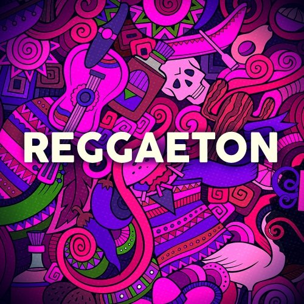

No es solo 'Despacito': el reguetón se está convirtiendo en un fenómeno mundial. "Es el género de música que frecuentemente encabeza las listas a nivel global", dice Spotify.
El número de personas que escuchan reggaetón en Spotify ha crecido un 119% desde 2014 a 2017, según cifras de la plataforma. Por su parte, el número de escuchas pop ha crecido solo un 13% en el mismo periodo.Leer mas...
El fenómeno que arrasa en el mundo: el reggaetón, ¿por qué?

Avicii: la huella de una estrella fugaz de la electrónica
Aunque la noticia de la muerte del reconocido DJ sueco Avicii, el viernes pasado, sorprendió en medios de todo el mundo por la corta edad del artista (28 años), en su círculo más íntimo ya se intuía desde hace un par de años un posible desenlace trágico.
Ya en el 2014 se le manifestó una pancreatitis aguda que lo condujo a interrumpir una de sus giras y someterse de inmediato a una cirugía urgente de extirpación de la vesícula y el apéndice. ¿El motivo? la ingesta pronunciada de alcohol.Leer mas...
Ya en el 2014 se le manifestó una pancreatitis aguda que lo condujo a interrumpir una de sus giras y someterse de inmediato a una cirugía urgente de extirpación de la vesícula y el apéndice. ¿El motivo? la ingesta pronunciada de alcohol.Leer mas...